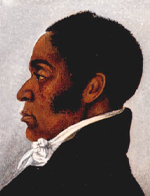

|

|

|
|
|
James Forten was, in many ways, the African-American community's
answer to Benjamin Franklin. Born into modest circumstances in
Philadelphia, he enjoyed success in many different professions--among
them carpenter, sailor, inventor, entrepreneur, and dentist--and became
one of the United States' wealthiest men.
Forten was born to a free black family in Philadelphia in 1766. He
had some education as a youngster, attending the Quaker school for free
black children. His father died when he was nine, however; shortly
thereafter, James went to work full time. His employer was Robert
Bridges, who owned a sail loft--a business that engaged in the
manufacture of sails for ships. Forten labored there for several years,
then left to serve on the privateer Royal Louis during the Revolutionary
War. During his military career, he served with distinction until he was
captured. During his captivity, he narrowly escaped a return to slavery,
persuading the British to treat him as they would a white man--as a
prisoner of war.
Once the conflict was over, and Forten was freed, he returned to work
for Bridges. At the age of 20, he was promoted to foreman of the shop.
When Bridges finally retired in 1798, he sold the business to Forten.
With 38 people in his employ, and a penchant for developing newer and
better sails, Forten quickly found himself the owner of one of the most
prosperous businesses in Philadelphia. In 1806, he married Charlotte
Vandine. The long and successful marriage produced nine children--four
sons, and five daughters. Ultimately, Forten's sons Robert and James
took over the sailmaking business.
As with most wealthy people of his time--both black and white--Forten
enjoyed a life of luxury. However, like other free black entrepreneurs,
he also used his wherewithal to advance reformist causes. As an African
American, Forten could not vote or hold office, but he was an active and
impassioned speaker on behalf of abolition--and against colonization.
"Has the God who made the white man and the black left any record
declaring us a different species?" he asked in a widely reprinted
address that was clearly influenced by his reading of Shakespeare. "Are
we not sustained by the same power, supported by the same food?" He
helped form and fund the American Anti-Slavery Society in 1833, even
hosting the organization's first meeting in his house. He was also a
prolific writer, authoring pamphlets as well as articles for William
Lloyd Garrison's newspaper The Liberator. In addition, while
abolition was always the cause closest to his heart, Forten agitated for
temperance and women's suffrage.
Forten remained active in both his business and reform activities
until his death in 1842. By then, the family's fortune and penchant for
activism was well established, and Forten's legacy was carried on by
subsequent generations. His daughters Harriet and Sarah were deeply
involved in the activities of the American Anti-Slavery Society, while
his daughter Margaretta was an officer of the Female Anti-Slavery of
Philadelphia. Forten's granddaughter, Charlotte Forten Grimké, was
even better known--one of the nineteenth century's foremost educators and
activists.
Source: Christopher Bates, ed. The Encyclopedia of the Early
Republic and Antebellum America (Armonk, NY: M.E. Sharpe, 2010), 378.
|